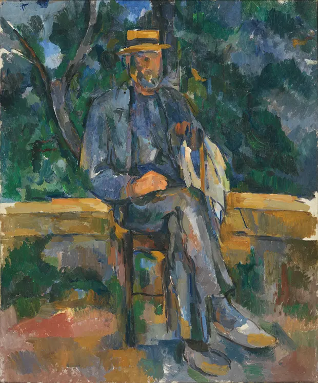

Six reasons why artist’s artist Paul Cézanne is hailed as "greatest of us all"
As Tate Modern opens major Cézanne exhibition, here’s why Picasso admired artist so much he bought his mountain
Paul Cézanne, born in 1839, who painted quietly up to his death in 1906, is the unrivalled modern artist’s modern artist, called the “greatest of us all” by Claude Monet. The most intimate proof of this is how many of his successors have felt the need to move in on his patch – literally. When Picasso told his dealer Ambroise Vollard he had just bought “Cézanne’s mountain”, Vollard thought he meant one of his canvases of Mont Sainte-Victoire. In fact Picasso had purchased an estate on its slopes in the south of France.
The abstract painter Sean Scully and his family now also “in fact live near Mont Sainte-Victoire, in Aix-en-Provence”. For Scully, the mountain “stands as a silent sentinel that we see every day. It’s monumental yet extremely delicate in the manner in which it absorbs the light of time and season.”
Monumental, yet extremely delicate – the same could be said of Cézanne’s towering presence in the history of modern art. Scully is a 21st-century artist who paints in the tradition of Cézanne who found the abstract in nature, with long furrowed lines that recall ploughed fields.
But he is by no means the only artist who still looks to Cézanne, 80 of whose paintings go on show this week in a major exhibition at Tate Modern. In the catalogue a range of contemporary artists from the Turner winner Lubaina Himid to the Belgian painter Luc Tuymans share their admiration. Cézanne defined what modern art is before anyone knew it existed, inspiring the likes of Picasso, Georges Braque, Matisse and Jasper Johns (a lender to the show).
Here are the six reasons why Cézanne is so admired:
Reason #1
For 500 years, western artists pictured the world stretching away in perspective, until Cézanne turned his table upwards and shoved it in your face. His paintings are made of parallel planes of colour, that can look like a traditional perspective “view” from a distance, yet turn out to be a flat arrangement up close. This was a bomb in the heads of Picasso and Braque who, from about 1908, experimented with Cézanne’s implosion of space to produce cubism. In a cubist painting Cézanne’s planes get a further mashing to make you see that reality is not a picture at all, it’s a mayhem we pretend to make sense of.
Reason #2
Cézanne changed art’s relationship with the physical world. Before he painted his apples, artists tried to capture a general view of reality in which every object is part of a bigger picture. But Cézanne dwells like a fetishist on individual things that he grasps with a mental fist. This twists the ancient genre of the still life into something much more atomised and brutal. It led within a few years of his death to Marcel Duchamp inventing the “readymade”, asserting that an artist doesn’t have to paint or sculpt but can simply “choose” something, just as Cézanne chose his pieces of fruit.
Reason #3
Picasso revolutionised art when he turned faces into masks – but he got this idea from Cézanne whose Bathers have faces seemingly hewn from wood. Cézanne saw them as masks, perhaps because he was socially distanced: even his wife seems locked in a porcelain Japanese mask in his portraits. His self-portraits, too, see himself from outside; he was a stranger to himself. This sense of alienation may be his biggest modern idea. It helped shape not just art but 20th century literature and philosophy in its sense of the isolated, imperilled, unstable self.
Reason #4
Cézanne was the godfather of modernism from the 1910s to 1950s, but when it gave way to postmodernism he seemed to become a more remote ancestor. Yet it is astonishing how much his fractured view of reality anticipated a TV and digital age of pixellated images, bytes of information, flickering screens. The digital artist Cory Arcangel and the pop artist Richard Hamilton are among those who have applied a Cézanne-like vision to today’s media. But our whole fragmented infosphere is already there in Cézanne’s 1902-6 painting of Mont Saint-Victoire from the Philadelphia Museum of Art with its crushed chunks of information pulsing in an electric sky as dense and complex as our lives.
Reason #5
Cézanne is the artist’s artist, in the same way that Einstein, who published the theory of special relativity when Cézanne was still painting in 1905, is the physicist’s physicist: Cézanne took art into a relativistic cosmos of uncertainty as he painted Mont Sainte-Victoire again and again, seeing it in radically different ways, because even something as solid as a mountain is impossible to completely or finally know. Monet, who outlived him, emulated this in his Nymphéas.
Reason #6
Cézanne challenges writers to find words for his sheer quiddity. He went to school in Aix with the novelist Zola, who would go on to portray a young, unsuccessful – and unstable – Cézanne in The Masterpiece. When the real Cézanne finally won renown he was written about as the god of modern art by Roger Fry, Robert Hughes, the poet Rilke and more – all rising to the impossible, irresistible challenge of putting those apples into words. The art historian TJ Clark says in his new book If These Apples Should Fall that after so many attempts, Cézanne “cannot be written about any more” – but he does just that in a book that shows how this great artist is still stretching minds.